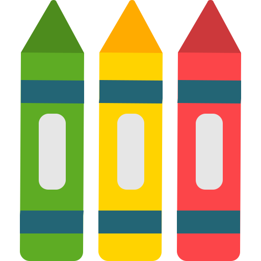

Portfolio

Mon timelapse des étoiles
Depuis que je suis jeune j’ai une fascination pour l’astronomie (et pas l’astrologie 😤). Depuis mes premiers films de SF, comme Alien à l’époque, où Interstellar plus récemment (ouais bon 2016 quand même)...
OSINT et Indiana Jones
Je vais pas vous donner la définition Wikipédia, ou la définition avec des mots compliqués. Déjà d'une parceque c'est pas marrant mais surtout parceque c'est pas marrant ... 👀. L'OSINT consite à utiliser des outils libre d'accès...
Disney c'était mieux avant ?
Je suis allé voir Wish au ciné... Et c'était très moyen, en fait c'était pas ouf, ni nul, c'était neutre ....